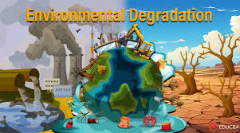

The Global Population

For most of human history, the global population was just a tiny portion of what it is today. But over the last few centuries, the global population has exploded. In 1800 there were only 1 billion people worldwide, today there are over 8 billion!
Population growth is fast becoming one of the most pressing issues of the 21st century, making managing and understanding the implications of rapid population growth imperative. Numerous factors influence this growth, ranging from economic developments, healthcare advancements, migration patterns, and governmental policies.
As the world grapples with the challenges presented by this surge, solutions that focus on sustainable development and resource management become vital. Analyzing population growth helps policymakers and planners make informed decisions to ensure a balanced coexistence between humans and the environment.
Why is the Earth’s population growing?

The global population is experiencing a surge primarily due to advances in healthcare, improved living conditions, and reduced mortality rates, all of which are leading to longer life spans. Over the past few decades, medical breakthroughs have curtailed the spread of infectious diseases, and better sanitation practices have reduced health risks.
Not only this, advancements in agriculture and technology have ensured more consistent food supplies, leading to reduced famine and malnutrition. As birth rates remain high in many regions - especially in developing countries - the combination of increased births and decreased mortality contributes to the continued rise in population growth.
What are the implications of population growth?
Resource Depletion
As the population continues to expand, there's an increased demand for resources like water, energy, and raw materials. Over time, these resources will become more scarce, leading to competition for access and potentially even causing conflict or price hikes.
Environmental Degradation

Rapid population growth contributes to higher waste production, including sewage, pollution, and carbon emissions. This can result in air and water pollution, deforestation, and faster depletion of natural habitats, leading to biodiversity loss.
Economic Strain
A surging population can put a strain on economic resources, especially in regions that are not prepared for the influx. This can lead to increased unemployment, poverty, and demands on services like education, healthcare, and housing.
Infrastructure and Services
Growing populations need more infrastructure like roads, schools, and hospitals. In many burgeoning cities, infrastructure development can't keep pace with population growth, leading to overcrowded transportation systems, inadequate health and education facilities, and strained public services.
Food and Water Scarcity

As the global population increases, so does the demand for food and clean water. This can lead to overexploited fisheries, overgrazed pastures, and groundwater depletion, making it challenging to sustain the growing global community. Over-farming and industrial-scale farming also have negative effects on the environment, compounding these issues.
Social Challenges

Dense populations, especially in urban areas, can lead to social unrest, increased crime rates, and challenges in ensuring equitable opportunities for all.
Health Concerns
Overcrowded areas - especially those without adequate sanitation and with stretched health facilities - become hotspots for the spread of diseases. In such areas, outbreaks of disease can occur more frequently, and healthcare systems can become overwhelmed.
A closer look at the environmental impact of population growth
We've previously discussed the adverse effects of population growth on the environment, especially concerning resource depletion and environmental degradation. Let's delve deeper into these impacts:
Resource Depletion
Resource depletion refers to the consumption of a resource faster than it can be replenished. As the global population continues to grow, the demand for various resources increases exponentially, leading to potential scarcity issues.
Water - Freshwater is a prime example of a resource under strain. Places like Cape Town in South Africa have faced severe water crises in recent years. In 2018, the city came close to "Day Zero", a day when it was predicted that the government would have to turn off the water supply to businesses and homes in order to conserve vital remaining resources. Over-extraction from rivers and reservoirs, dated water infrastructure, combined with consecutive years of drought and growing population demands, brought the city to this brink.
Fossil Fuels - As populations increase, there's not just a demand for more fuel, but also a pressing need for energy to elevate living standards and foster economic growth. Regrettably, this often leans on the utilization of fossil fuels, which are detrimental to the environment due to their emission of greenhouse gases. Take India, for instance. As the country with the highest population and undergoing rapid development, it finds itself dependent on fossil fuels, especially coal. This is because renewables, though promising, often take longer to implement and require significant investment. 👉 To learn more about India’s paradoxical situation when it comes to climate change, head over to our article.
Minerals - Certain minerals essential for modern technology and industry, like lithium used in batteries or rare earth metals utilized in electronics, are being extracted at unsustainable rates. This leads to the depletion of easily accessible deposits and necessitates more energy-intensive and environmentally damaging mining practices. 👉 To discover why lithium batteries are harmful to the environment why not check out our article on the issue.
Environmental Degradation
Environmental degradation refers to the deterioration of the environment through the depletion of resources and the destruction of ecosystems.
Deforestation - The Amazon rainforest, often referred to as the "lungs of the Earth," has seen large portions cleared away for agriculture, particularly for cattle ranching and soybean production. This not only reduces biodiversity but also affects the global carbon cycle, as trees absorb carbon dioxide and provide oxygen. 👉 To read more about the devastating impact of deforestation on the Amazon rainforest, take a look at our article.
Air and Water Pollution - Rapid urbanization and industrialization, especially in emerging economies, can lead to significant environmental pollution. For example, cities like Delhi and Beijing have faced hazardous air quality levels due to a combination of vehicular emissions, industrial discharges, and other pollutants. Similarly, rivers like the Ganges in India and the Yangtze in China have faced pollution due to industrial effluents, affecting both human and aquatic life.
Loss of Biodiversity - Urban sprawl and deforestation, driven by increasing populations, have resulted in significant habitat loss. Iconic species like the Sumatran orangutan, Javan rhinoceros, and the vaquita porpoise face extinction threats due to habitat encroachment and human activities. Additionally, the Great Barrier Reef, a global biodiversity hotspot, has suffered bleaching events because of human-induced climate change, further exacerbated by direct human impacts like fishing and coastal development.
Soil Degradation - Due to rising population growth and the subsequent surge in global food demand, intensive agricultural practices, including the use of pesticides and synthetic fertilizers, have become prevalent. Unfortunately, these practices can result in soil degradation.
What can be done to limit the negative impacts of population growth?
Education and Awareness - One of the most effective ways to control population growth is through education. Educating women, in particular, has been linked to lower fertility rates as women who receive education tend to have fewer children and also have them later in life.
Access to Family Planning - Providing easy access to contraception and family planning services can help couples make informed choices about the number of children they wish to have.
Improving Health Care - Reducing infant mortality rates can lead to smaller family sizes. When parents are confident that their children will survive into adulthood, they tend to have fewer children.
Gender Equality - Empowering women, ensuring their rights, and giving them control over their reproductive choices can help stabilize population growth.
Delaying Marriage - Societies where early marriages are commonplace tend to have higher birth rates. Promoting the delay of marriage can reduce fertility rates.
Protecting Resources from Increasing Demand
Sustainable Agriculture - Implementing agricultural practices that increase yield without depleting the soil or using excessive water can help meet food demand sustainably. Techniques include crop rotation, conservation tillage, and organic farming. 👉 To discover more about sustainable farming practices, take a look at this article.
Water Conservation - Encouraging practices that save water, like rainwater harvesting, wastewater recycling, and the use of drought-resistant crops, can help conserve this vital resource. 👉 For tips on how you can reduce your own water consumption, click here.
Efficient Energy Use - Promoting energy-efficient appliances, buildings, and vehicles can reduce the power demand. Additionally, transitioning to renewable energy sources reduces reliance on fossil fuels.
Waste Reduction - Encouraging societies to adopt a circular economy model where products are designed to be reused and recycled can limit the over-extraction of resources.
Protecting the Environment from Degradation
Afforestation and Reforestation - Planting trees and rehabilitating forests can combat deforestation, improve air quality, provide habitats for wildlife, and even help combat global warming by capturing and storing excess carbon dioxide.
Preservation of Natural Habitats - Creating and maintaining protected areas, such as national parks and wildlife sanctuaries protects biodiversity, and reduces destruction from urban sprawl.
Sustainable Urban Planning - Designing cities to be green and sustainable can help manage the environmental impact of urbanization. This includes green spaces, efficient public transport systems, and environmentally friendly buildings.
Emission Controls - Implementing stricter emission standards for industries and vehicles can help reduce pollution. In order to meet global climate targets, countries must work to decarbonize their economies and adopt renewable energy alternatives.
Awareness Campaigns - Educating the public about the impacts of their choices can drive consumer behavior towards more sustainable products and practices.
Legislation and Policy - Enforcing environmental laws and incentivizing sustainable practices through government policy can guide industries and individuals toward behavior that is less harmful to the environment.
Will the global population stabilise?

Population growth is showing signs of slowing, and experts predict that the global population will peak around 2080 at approximately 10.4 billion. This is in part because of a trend towards having fewer children.
However, even if the global population does stabilise - or even decrease - by the end of the century, we’re still looking at a predicted 28% increase by 2080. This will put huge pressure on resources that are already dwindling and strained in many regions of the world - a problem that is exacerbated by the impacts of climate change.